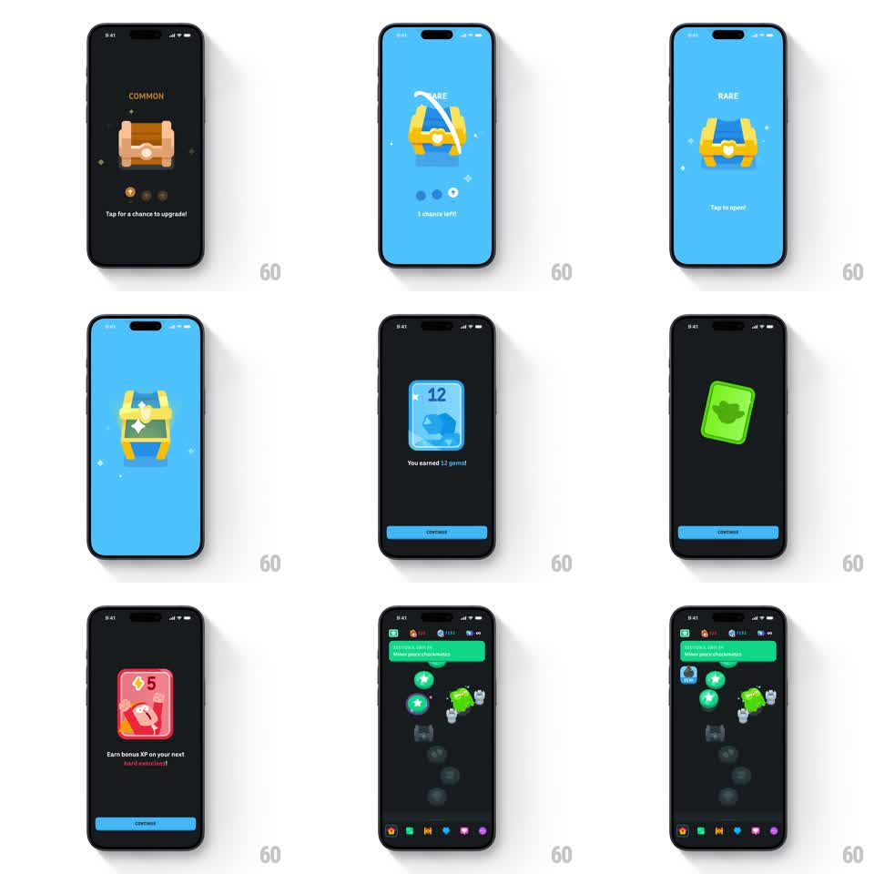

Media
Frame-by-frame

Rebuild this interaction 1:1: Duolingo's chest upgrade flow - tap a COMMON chest for a chance to upgrade: the chest shakes, the stage flashes blue as it becomes RARE, chance pips deplete, then the lid bursts open and reward cards spin in one by one (gems, avatar gear, bonus XP) with CONTINUE.

Rebuild this interaction 1:1: Duolingo's chest upgrade flow - tap a COMMON chest for a chance to upgrade: the chest shakes, the stage flashes blue as it becomes RARE, chance pips deplete, then the lid bursts open and reward cards spin in one by one (gems, avatar gear, bonus XP) with CONTINUE.
## Integration
Integration: stack-agnostic spec - springs given as stiffness/damping, timed motions as duration + curve; map every value to your framework and animation library of choice.
## Scene
Stage 1 (dark): COMMON wooden chest, three chance pips below, "Tap for a chance to upgrade!". Stage 2 (bright blue): RARE golden-blue chest, "Tap to open!". Stage 3 (dark): reward cards reveal one at a time ("You earned 12 gems!", avatar item, "+5 bonus XP"), each with CONTINUE.
## Motion spec
Pattern: tap-driven multi-stage gacha sequence.
- Upgrade attempt: chest shakes (rotate +-5deg, 400ms ramping), a white arc sweeps over it (300ms), stage flashes and crossfades to blue as the chest transforms (400ms - wood morphs to gold/blue via color wipe); one pip empties (200ms fade).
- Open: chest shakes again, lid bursts (rotateX -70deg, spring overshoot), light column + sparkles (300ms).
- Reward cards: each spins in (rotateY 90 -> 0, spring ~320/18) centered on the dark stage, holds while the user reads, flips out on CONTINUE as the next card spins in (150ms gap).
- Final: sequence ends on the app's path screen where earned items rain onto the lesson path (small icons falling with soft bounces, 60ms stagger).
## Calibration
- The rarity transformation (color wipe + stage flash) must read as an upgrade - bigger energy than the opening itself.
- Card spin uses the same spring every time; rhythm over novelty.
## Reduced motion
Stages crossfade; cards fade in (200ms each).
## Don't miss
- Chance pips are part of the tension - show them depleting.
- The final items landing on the lesson path ties the reward back into the app.